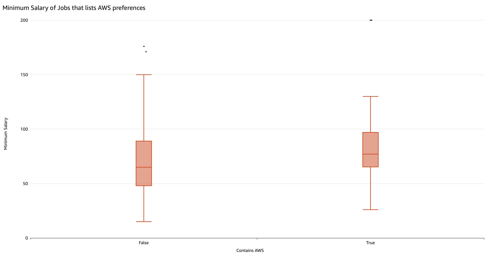
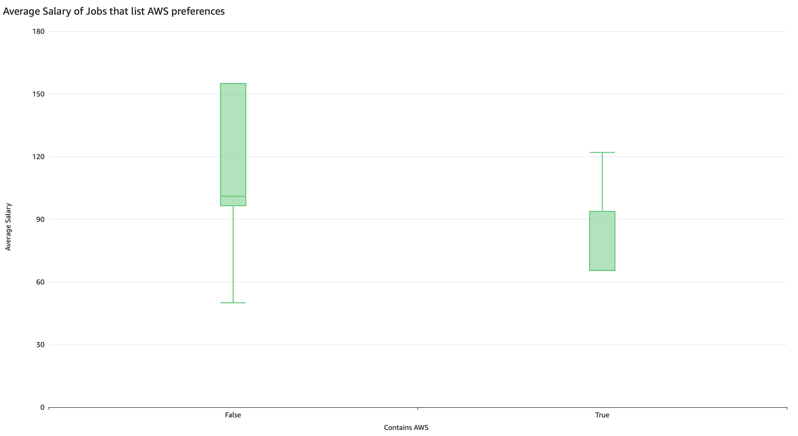
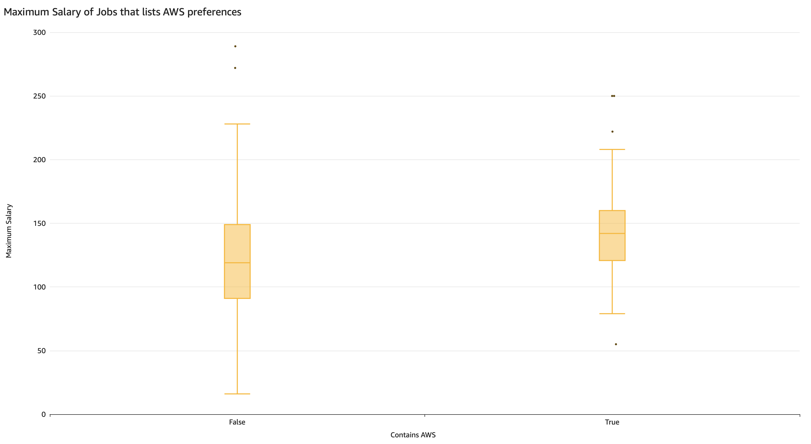
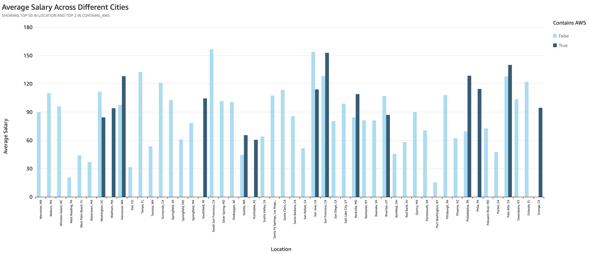
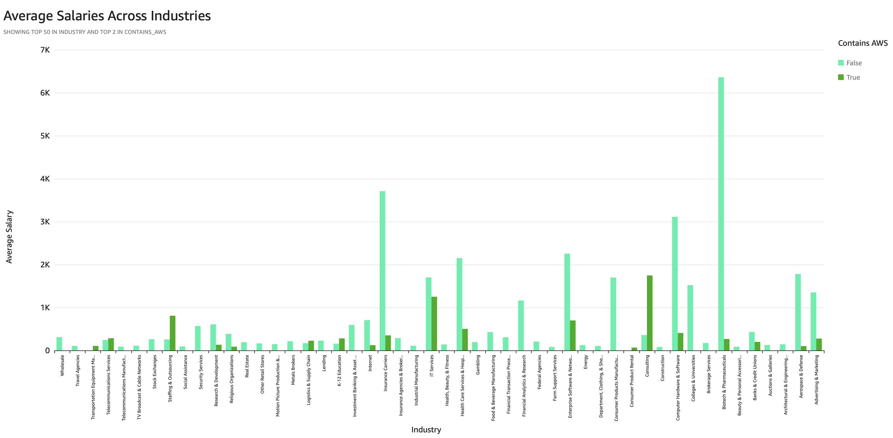
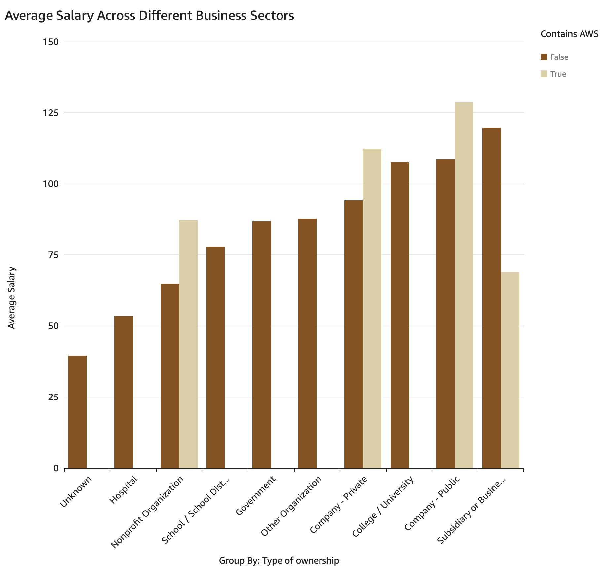
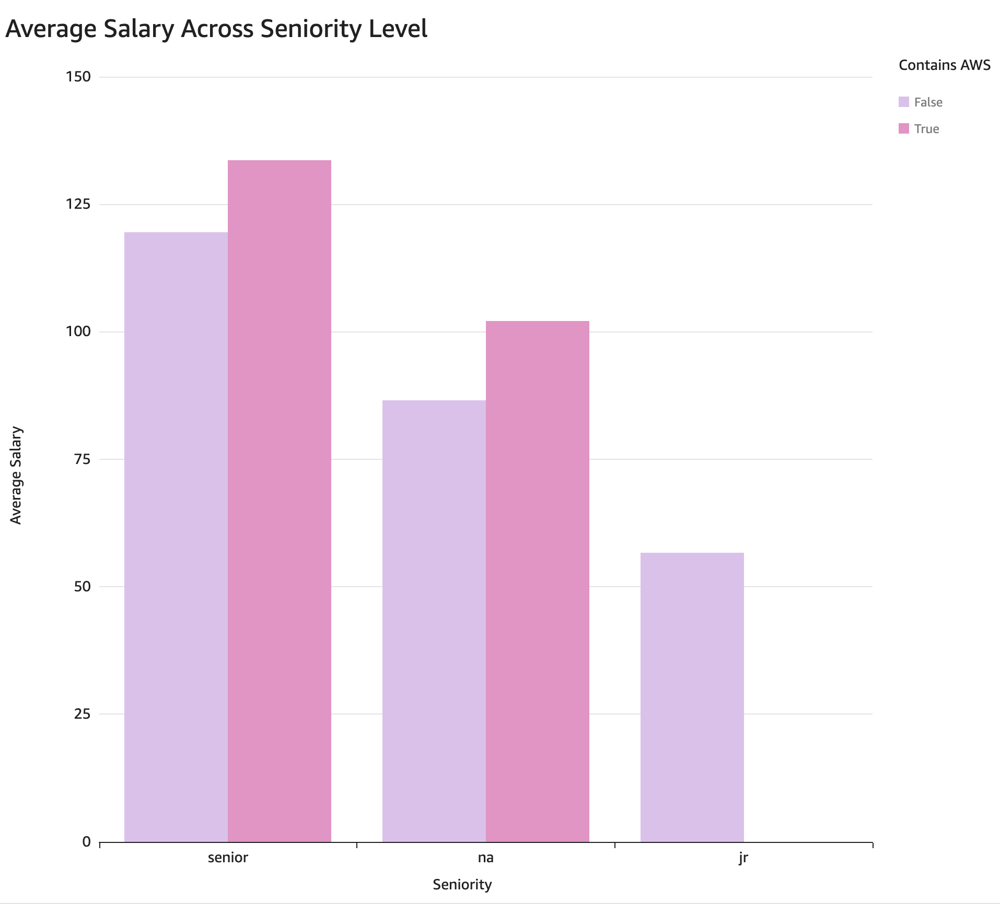

Amazon Web Services Analysis

This graph shows the relationship of minimum salary and whether or not AWS skills were included in the job listing. We see that when AWS skills are not included, it covers a wider range compared to that when AWS skills are included. However, the median of the box of when AWS skills are included is higher than that of the opposite.
Here we see the relationship of average salary and whether or not AWS skills are included in the job listing. We see that the false column has a wider range and overall higher quartiles and median than that of the true column.


Next, we see the relationship of maximum salary and whether or not AWS skills are included in the job listing. Again we see that the false column covers a wider range compared to the true column. The true column's median is higher than that of the false column.
In this graph, we see the top 50 cities in the United States with job listings and it compares whether or not AWS skills are included. From what we see, most job listings does not list AWS. Of the cities that does list AWS, they are: Washington DC, Waltham, MA, Vancouver WA, Southfield, MI, Seattle, WA, Scottsdale, AZ, San Jose, CA, San Francisco, CA, Rockville, MD, Riverton, UT, Philadelphia, PA, Palo Alto, CA, and Orange, CA. For these cities that lists AWS, most cities have job listings that need AWS skills, than not.


In this graph we see the top 50 industries with job listings and it compares whether or not AWS skills are included. We see that the top 5 average industries does not contain AWS in their job openings. We also see a variety of different industries that contain AWS skills in their job openings.
Next, in this graph we see the different business ownership types and their relationship of whether or not AWS skills are stated in the job listings. We see that Non-profit Organizations, Private Companies, Public Companies, and Subsidiaries or Business Segments, are among those that list AWS skills for their open positions.


Finally, this graph shows us the relationship between Seniority level and whether or not AWS skills are listed for the job. We see that more senior level positions do ask for AWS skills, followed by positions that don't list seniority level. On the other hand, junior level positions has no listings that contain AWS requirements.